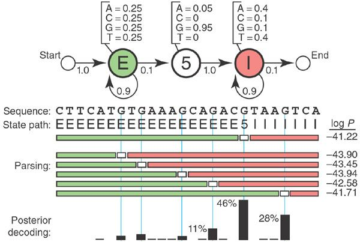

Nature: What is Hidden Markov Model
这是一篇发布在 Nature 上面的文章，作为计算机研究僧，其实不怎么了解 Nature 那一套，然而这篇文章，仅仅是介绍什么叫 HMM ，就光荣发布了，当时距离 HMM 被提出应该也有十几二十年了吧，隔行如隔山，看来生物领域还是很需要计算机专业的人才。稍微扯一点，最近在看《未来简史》，作者在书中就有一个看法，以后人类的发展就要靠计算机和生物科学家，人脑是计算机，而计算机也是人脑。
- 文章来自 What is a hidden Markov model?
- 关于 HMM 的详细推导，在前面的博客里。
Motivation: computational sequence analysis
生物上可以检测出一系列核苷酸，通过脑海里仅剩的高中生物的知识可以知道它们是 AGCT 里面的一种。
一段核苷酸序列组成了一小段基因，基因有显性，隐性，连接子，三种类型。
现在需要标注一段核苷酸序列的类型（exons, introns, or intergenic sequence），遇到问题：
- 如何对分类结果进行评分
- 概率的解释，即对评分的信心
- 如何做一个通用的模型，而不是定制化的模型
然后需要借助于 HMM，据说HMM的在生物学上的应用有以下几类：
genefinding, profile searches, multiple sequence alignment and regulatory site identification
A toy HMM: 5′ splice site recognition
下面给出了一个例子：
已知核苷酸的类型，找到 exons(E) 和 introns(I) 序列的拼接点 (5) 的位置。
E, 5, I 是三个隐状态 state，ACGT是可观测空间状态，概率转移图如下。

要计算的是 $\max_z P(x,z|\lambda)$
解决方法： Viterbi 算法
问题：
viterbi算法只能找到概率最大的隐序列，其他的隐序列是怎么算出来的呢？
由于 5 只能表现为 G，A，取其中一个 G，在 $t_1$ 时刻， $t_1$ 之前DP的过程中只保留了最大概率的路径，到达 $t_1$ 时，不取 $t_1$ 层的概率最大值，只取 G ，再以此为起点继续往后算最大概率的路径。当 $P(x,z_1|\lambda)$ 与 $P(x,z_2|\lambda)$ 非常接近时，怎样描述 confidence？
由于本序列的特殊性，所有的 $z$ 可以算出 $P(x,z|\lambda)$ 因此归一化计算某一序列的确信度。验算了一下，作者确实是这样算的：1
2
3
4
5log_value = [-41.22, -43.90, -43.45, -43.94, -42.58, -41.71]
value = []
for x in log_value:
value.append(math.exp(x))
normalization(value)1
2
3
4
5
6[0.47365226171675695,
0.03247509303560841,
0.05093108413267137,
0.031201726424101746,
0.1215679574980319,
0.29017187719282955]稍微差了一点点是因为作者只标出了6个数据，其余的几个很小就没给。
不过，不取 log 不就能体现出概率的不同了嘛，其实 $e^{-41.22}$ 与 $e^{-41.71}$ 差得挺多的。
发现
在这个例子中状态转移图特别像一个带了概率的自动机，如果对于序列有什么要求，都可以加在状态图里。这令人，又想起了学编译原理的苦逼岁月。
还有对于 Viterbi 的改造，可以说也是相当自然的，或者说这是个 Conditional Viterbi，因为要求了必经某个点作为一个条件。
另外，这个例子实在有点特别吧，刚好就只有 14 个序列，真实情况下不可能算出所有情况归一化的，一般就除掉分母 $P(x,\lambda)$ 不就好了嘛。
还有一点思考就是，计算出一个最有可能的状态序列以后，需不需要验算一下它的转移概率，发射概率，到底和给定的参数差多少呢？这种差异要不要再反馈回去呢？
OK，有啥讨论的欢迎在下面留言（并没有评论区）。